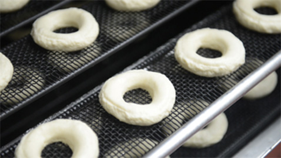
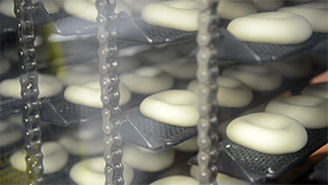
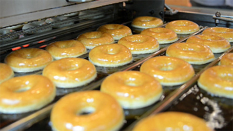
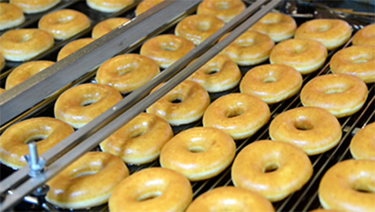
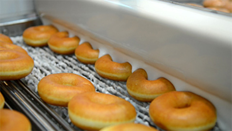
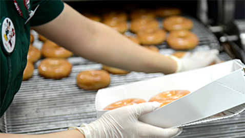

오리지널 글레이즈드 도넛이 탄생하기까지 따끈한 제조과정을 만나보세요.
* 도넛의 제조과정을 1단계 반죽 & 분출부터, 2단계 숙성, 3단계 조리, 4단계 뒤집기, 5단계 글레이징, 6단계 포장 & 식히기의 단계를 나누어 순차적으로 보여주는 영상입니다.
-

1.반죽 & 분출
크리스피 크림만의 독특한 믹스로 이스트, 물과 섞어 커다란 반죽을 만든 뒤, ‘분출기’라는 기계에 넣고 공기 압력으로 반죽을 잘라냅 는 것도 있고 없는것도 있습니다. 구멍이 없는 도넛은 나중에 잼, 커스터드, 치즈 필링 등으로 채웁니다.
-

2. 숙성
길다란 ‘숙성기’는 도넛을 부풀어오르게 하는 기계입니다. 선반 위에 올려진 도넛이 위 아래로 천천히 움직이면서, 열과 습도로 인해 부풀어 오릅니다.
-

3. 조리
이스트로 부풀린 도넛이 순 식물성 기름 속으로 떨어집니다.
-

4. 뒤집기
도넛의 한쪽 면이 갈색으로 변하면, 도넛은 자동으로 뒤 집어져서 곧 양쪽 모두 황금빛이 도는 갈색으로 변합니다.
-

5. 글레이징
먹음직스러운 황금빛 갈색 도넛이 따뜻한 ‘글레이즈 폭포’ 아래로 차례차례 지나가면, 여러분의 입맛에 맞는 맛있는 도넛이 탄생합니다.
-

6. 포장 & 식히기
따뜻한 글레이즈드 도넛이 나오는 순간, 여러분이 바로 맛 볼 수 있도록 포장합니다. 나머지 도넛들은 천천히 식히면서 이동한 뒤, 겉을 입히고 속을 채워서 어소티드 도넛으로 만들어 집니다.
안심하고 즐기세요!
크리스피 크림에서 당일 판매되지 않는 도넛은 전량 폐기처분 되니 안심하고 드세요. 믿을 수 있는 크리스피 크림의 깐깐함이 고객 여러분들을 즐겁게 합니다.